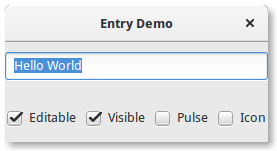

Entry widgets allow the user to enter text. You can change the contents with theGtk.Entry.set_text() method, and read the current contents with the Gtk.Entry.get_text() method. You can also limit the number of characters the Entry can take by calling Gtk.Entry.set_max_length().
Occasionally you might want to make an Entry widget read-only. This can be done by passing Falseto the Gtk.Entry.set_editable() method.
Entry widgets can also be used to retrieve passwords from the user. It is common practice to hide the characters typed into the entry to prevent revealing the password to a third party. Calling Gtk.Entry.set_visibility() with False will cause the text to be hidden.
Gtk.Entry has the ability to display progress or activity information behind the text. This is similar to Gtk.ProgressBar widget and is commonly found in web browsers to indicate how much of a page download has been completed. To make an entry display such information, useGtk.Entry.set_progress_fraction(), Gtk.Entry.set_progress_pulse_step(), or Gtk.Entry.progress_pulse().
Additionally, an Entry can show icons at either side of the entry. These icons can be activatable by clicking, can be set up as drag source and can have tooltips. To add an icon, use Gtk.Entry.set_icon_from_icon_name() or one of the various other functions that set an icon from an icon name, a pixbuf, or icon theme. To set a tooltip on an icon, use Gtk.Entry.set_icon_tooltip_text()or the corresponding function for markup.

import gi
gi.require_version('Gtk', '3.0')
from gi.repository import Gtk, GObject
class EntryWindow(Gtk.Window):
def __init__(self):
Gtk.Window.__init__(self, title="Entry Demo")
self.set_size_request(200, 100)
self.timeout_id = None
vbox = Gtk.Box(orientation=Gtk.Orientation.VERTICAL, spacing=6)
self.add(vbox)
self.entry = Gtk.Entry()
self.entry.set_text("Hello World")
vbox.pack_start(self.entry, True, True, 0)
hbox = Gtk.Box(spacing=6)
vbox.pack_start(hbox, True, True, 0)
self.check_editable = Gtk.CheckButton("Editable")
self.check_editable.connect("toggled", self.on_editable_toggled)
self.check_editable.set_active(True)
hbox.pack_start(self.check_editable, True, True, 0)
self.check_visible = Gtk.CheckButton("Visible")
self.check_visible.connect("toggled", self.on_visible_toggled)
self.check_visible.set_active(True)
hbox.pack_start(self.check_visible, True, True, 0)
self.pulse = Gtk.CheckButton("Pulse")
self.pulse.connect("toggled", self.on_pulse_toggled)
self.pulse.set_active(False)
hbox.pack_start(self.pulse, True, True, 0)
self.icon = Gtk.CheckButton("Icon")
self.icon.connect("toggled", self.on_icon_toggled)
self.icon.set_active(False)
hbox.pack_start(self.icon, True, True, 0)
def on_editable_toggled(self, button):
value = button.get_active()
self.entry.set_editable(value)
def on_visible_toggled(self, button):
value = button.get_active()
self.entry.set_visibility(value)
def on_pulse_toggled(self, button):
if button.get_active():
self.entry.set_progress_pulse_step(0.2)
# Call self.do_pulse every 100 ms
self.timeout_id = GObject.timeout_add(100, self.do_pulse, None)
else:
# Don't call self.do_pulse anymore
GObject.source_remove(self.timeout_id)
self.timeout_id = None
self.entry.set_progress_pulse_step(0)
def do_pulse(self, user_data):
self.entry.progress_pulse()
return True
def on_icon_toggled(self, button):
if button.get_active():
icon_name = "system-search-symbolic"
else:
icon_name = None
self.entry.set_icon_from_icon_name(Gtk.EntryIconPosition.PRIMARY,
icon_name)
win = EntryWindow()
win.connect("delete-event", Gtk.main_quit)
win.show_all()
Gtk.main()